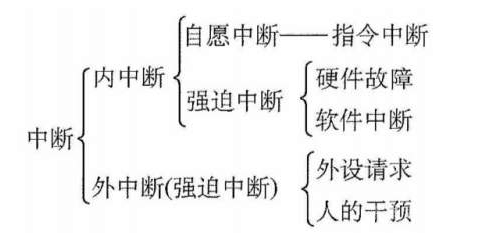

IA-32中断机制

保护模式下的中断源大致分为三类：
- 外部硬件产生的中断（外中断，Interrupt）：例如时钟、磁盘、键盘等外部硬件
- CPU 执行指令过程中产生的异常（Exception，属于强迫中断）：例如除法错(
#DE)，⻚错误(#PF)，常规保护错误(#GP) - 由
int等指令产生的软中断（Software Interrupt，属于自愿中断）：例如系统调用使用的int $0x80
前文提到，I/O 设备发出的 IRQ（属于） 由 8259A 这个可编程中断控制器（PIC）统一处理，并转化为 8-Bits 中断向量由 INTR 引脚输入 CPU，对于这些由8259A控制的可屏蔽中断有两种方式控制：
- 通过
sti，cli指令设置 CPU 的EFLAGS寄存器中的IF位，可以控制对这些中断进行屏蔽与否。 - 通过设置 8259A 芯片，可以对每个 IRQ 分别进行屏蔽。
在我们的实验过程中，不涉及对IRQ分别进行屏蔽。